りんごのまちいいづな
ダッシュボード & 仕様書
飯綱町産りんごPR事業 システム仕様書
更新日: 2026年3月1日 / システム実装: 株式会社みみずや
1. サイト定義・基本情報 (Site Identity)
| サイト名 | 飯綱町産りんごポータルサイト りんごのまちいいづな |
| 運用ドメイン | https://appletown-iizuna.com/ ※WEBサービス「ペライチ」にて取得済み |
| ロゴ |
※iバス等で使われているロゴを暫定的に利用します
|
2. 事業の背景と目的
3. 戦略・事業設計プロセス
本プロジェクトの基盤となる、システム開発前段から並行して実施された戦略的アプローチと定義プロセスです。単なるWeb制作に留まらず、顧客起点の施策立案手法を用いて「誰に」「何を」「どのチャネルで」「いつ届けるか」を最適化しています。
事業コンセプトと未来への展望
これまで町内に散在していたりんご関連情報を集約し、町の共通資産（ブランド）へと昇華させます。Webサイトとパンフレットはそのための「手段」に過ぎず、中長期的な視点で立場を超えたワーキンググループの発足や飯綱町の“りんごビジョン”策定へと繋げる、成長・発展型の情報基盤として設計しています。
関係者との戦略策定・方針決定プロセス
本戦略の策定にあたり、プロジェクトチーム内での度重なる専門的アプローチに加え、飯綱町役場（担当課）との密な打ち合わせや協議を複数回実施いたしました。行政としての課題感や方向性をすり合わせることで、地に足のついた実効性の高い展開方針を固めています。
ターゲット行動の可視化とプロジェクトマネジメント
SNS・広告流入
興味関心
アクション
継続利用
記事出演/シェア
① ターゲットの行動段階から逆算し、どのような導線でユーザーに行動を促すか（STP分析 / 顧客体験プロセス設計）を定義。
② 認知から関係人口化に至る一連のフェーズごとに、それぞれの関わりで誰がどう動くかを可視化。
③ 必要な業務を分解・タスク化し、町を含めた関係各位との定期的な情報共有にて事業進捗を評価。
具体的な戦略設計のアプローチ
- ワークショップ企画・進行: 役場やステークホルダーとのビジョン共有と要件のすり合わせを複数回実施し、プロジェクトの方向性を定義。
主なミーティング・協議実績
社内打ち合わせ
デザイン、WEB開発に関する技術的な調整打ち合わせを月に1回（基本第三金曜日）実施。
※ 2025年6月〜2026年2月 -
市場調査・競合ベンチマークからの戦略的インサイト（市場のスキマの発見）:
国内外の主要なりんご関連サイト、および町内既存媒体（Web/紙）を徹底分析し、本プロジェクトが勝ち筋とする「提供価値のスキマ（未開拓領域）」を明確に定義しました。
マーケティング戦略上の「結論（活路）」と次工程への接続分析の結果、既存メディアはいずれも「多言語対応＋SEO」と「情報統合＋更新性」の間に横たわるトレードオフの壁に阻まれていることが判明しました。
本プロジェクトは、この市場のスキマ（空白地帯）を正確に突き、確固たる優位性を持たせることこそが、後述する「システム設計」や「連動パンフレット展開」の根幹思想となっています。多言語対応・SEO強化 ➡統合・更新性・リアル拠点連動 ➡既存紙パンフ
(デジタル未対応)農家ホームページ
(情報限定的/SEO弱)インバウンド記事
(情報散財/更新無)本プロジェクト獲得4要素の同時解決システム構造
【市場の空白地帯】- 単一デザインでの多言語対応
- 高度に構造化されたUI/SEO
- 全情報のハブ機能
- 連動パンフ等、現場への還元

4. プロジェクト背景と課題
従来のマーケティング用語（AIDMAAttention(注意)→Interest(関心)→Desire(欲求)→Memory(記憶)→Action(行動)という、消費者の古典的な購買決定プロセスモデルです。等）に頼らず、農家を含めた関係者全員が直感的に共通認識を持てるよう、飯綱町独自の行動変容モデル「APPLE」を策定。このモデルに基づく具体的なペルソナを設定し、情報取得から地域貢献へと至る道筋を設計しました。
【独自概念】行動変容モデル「APPLE」の5段階
- Aware (知る)
- Pick up (手に取る)
- Participate (参画する)
- Love (愛着が湧く)
- Engage (深く関わる・推奨する)
「日本一のりんごのまち」を目指す上で、生産量等で青森県（弘前市など）と真っ向から争う「No.1戦略」ではなく、飯綱町ならではのローカルな情報との深い紐付きを活かした「オンリーワン戦略」を展開します。
一つの品目で、これほど多様な品種のバリエーション（色、大きさ、味、硬さ）が存在する作物は他に類を見ません。
- 表層的な面白さ： 食べ比べの楽しさ、見た目の可愛らしさ、多様な加工品といったストレートな魅力。
- 深層的な面白さ： なぜその色なのか、誰がどうやって育てたのか。「裏にあるストーリーまで味わえる」という、他作物にはない独自のポジショニング。
この多層的・多面的なりんごの見方を高度に構造化し、「生産背景から消費者体験までを一繋がりで提供できる町」としての独自のブランドポジションを確立します。
ポジショニング・マップ
(Top-down)
(Bottom-up)
(味・見た目・品種)
(生産者・ストーリー・背景)
（スペックと価格競争）
品種図鑑などの巨大な情報網羅性。
（その場限りのエンタメ）
- 農家個人のストーリーまで紐付け
- 表層(食べる)から深層(繋がる)まで統合
- 他産地には真似できない深い結びつき
単なるWebサイトの立ち上げにとどまらず、飯綱町が推進する『日本一のりんごの町ビジョン』に掲げられた3つの目標と7つのリーディングプロジェクト（尖がる取組）全てを横断的にブーストさせる「中央情報基盤（ハブ）」として本サイトを位置づけています。
これらのビジョン・プロジェクトと当サイトの各機能（知る・味わう・体験する・暮らす・営む）を相互に結合させ、公・民・学の全ステークホルダーが参加できる事業推進のエンジンとして機能するようKPI（アクセス数・体験申込数・継続閲覧率等）を設計しています。
5. システム・運用設計
システム全体のデータ連携構造（アーキテクチャ）
バックエンド（データ管理）は使い慣れたGoogleスプレッドシートに集約。画像ファイル等は外部ストレージ（AWS等）に格納し、そのURLをシートに記載する設計としています。
フロントエンドはペライチ（WEB構築サービス）を活用し、GAS経由でスプレッドシートのデータを動的に取得して画面を生成。
また、「リアルタッチポイント」として連動パンフレットへの展開に加え、WEBサイト上の情報提供窓口（フォーム等）から入力された町民・事業者からのリアルな情報連携が直接スプレッドシートに収集され、再びWEBサイトへと反映（循環）されるエコシステムを形成しています。
| 更新性重視（CMS） | コーディング技術がない一般職員でも情報更新、追記がしやすいよう、GoogleスプレッドシートをヘッドレスCMSフロントエンド（表示画面）を持たず、API経由でデータのみを提供するバックエンドシステムのことです。として活用。 |
|---|---|
| 画像・ファイル管理（AWS） | CMS（スプレッドシート）を軽量に保つため、画像やPDFなどの大容量メディアファイルはAWS等の外部保存領域（クラウドストレージ）に保存。その公開URLをスプレッドシートの指定セルに記載する運用とし、システム負荷を分散する構造。 |
| Web構築基盤（ペライチ） | フロントエンドは直観的なUI構築が可能な「ペライチ」などのサービスを採用。GAS（Google Apps Script）を用いて作成した独自API経由でスプレッドシートのデータをポーリング（取得）し、最新のコンテンツをWeb画面上に成形して表示する仕組みを実現。 |
| ナビゲーション構造 |
消費者の行動プロセスに合わせた5カテゴリ分類： 1. 知る 2. 味わう 3. 体験する 4. 暮らす 5. 営む |
| UI/UXUI(ユーザーインターフェース)は見た目や操作性、UX(ユーザーエクスペリエンス)はそれを通じた利用体験全体を指します。設計 |
|
6. ページ構成・設計
本プロジェクトでは、インバウンド対応を含めた全ページ多言語化（日本語・英語・繁体中文）を基本要件とし、運用フェーズにおけるコンテンツ増強を見据えたスケーラブルな構成としています。
7. 実装機能仕様一覧
7.1 情報表示機能（基礎機能）
-
トップページ: 飯綱町産りんごのシズル感あふれる写真を画面全体に配置し、訪問者に強烈な第一印象（WOW感）を与えます。
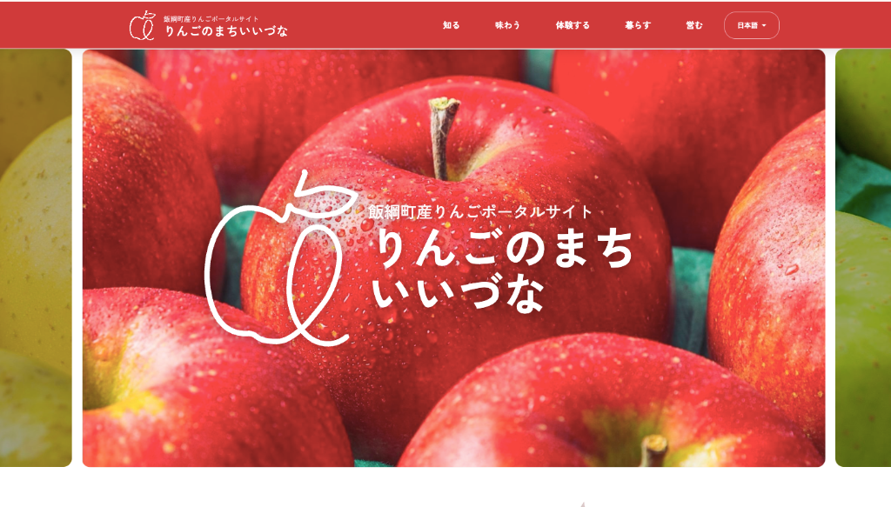サイトのウェルカムメッセージ:
飯綱町の美しい風景を思い浮かべてもらえるような、詩的なアプローチで構成。単なる歓迎ではなく、北信濃の気候や自然環境と、そこに生きる人々の営みが交差する「ちょうどいい場所」としての魅力を伝達します。
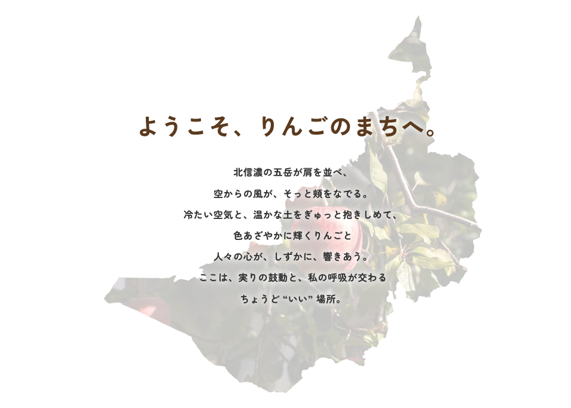東京との相対的な比較（インフォグラフィック）:りんごの生育に適した環境基準（標高・人口密度・気温等）を、日本の標準的な都市である「東京」と相対的に比較することで、飯綱町の特徴を視覚的に際立たせます。さらに、「東京から約2時間で、この豊かな非日常にたどり着く」という、他の主要りんご産地（青森等）にはない、飯綱町ならではの強力な強み（アクセスの良さと大自然の両立）を表現しています。
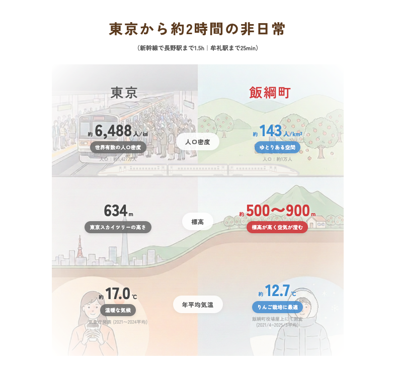
※平均気温は、飯綱町がHPで発表している役場屋上にて測定されたデータ（2021年4月〜2025年3月）をもとに算出しています。本質とは少し外れますが、デザイン策定の背景として、これまでよりも若干温度が高いというリアルな気候情報を知っておく必要があるため、あえて直近のローカルデータを採用しています。 -
コンテンツ統合表示（カードUI）:
品種紹介、直売所、観光情報、求人、イベント等、既存情報の整理統合表示。横スクロール可能なカード型の表示要素（コンポーネント）を採用し、限られた画面スペースでも多くの情報を直感的に探索できるように設計。
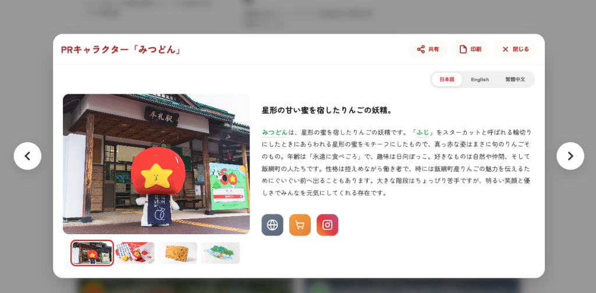
- 基本情報＋補足導線: 各テーマの基本情報表示に加え、関連リンクへの導線を設置。
-
統合キーワード検索・回遊システム:
① 記事検索機能（モーダル表示）: 全ページの右下に配置された追従型ボタン（フローティングボタン）から、いつでもサイト内全記事を対象とした横断検索が可能。おすすめキーワードの検索予測（サジェスト）機能も搭載し、目的の情報へ素早く到達できます。
 ② 関連キーワード（タグ）連携: 各記事に紐づく関連キーワード（例：「里親研修」など）を表示。
② 関連キーワード（タグ）連携: 各記事に紐づく関連キーワード（例：「里親研修」など）を表示。
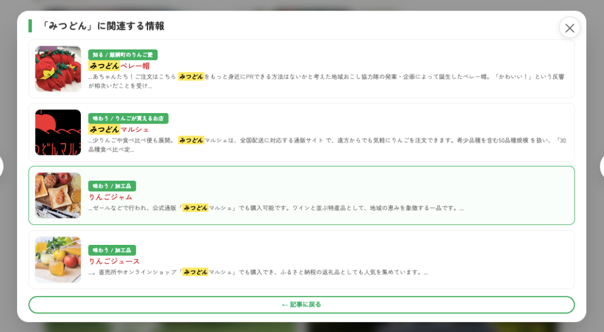③ 途切れない（シームレスな）回遊: 関連キーワードをクリックすると、即座に検索画面（モーダル）が立ち上がり、そのキーワード（タグ）に紐づく他の記事一覧を表示。ユーザーの「もっと知りたい」という興味の連鎖を途絶えさせず、サイト内の回遊性を効果的に高めるシステム構造です。
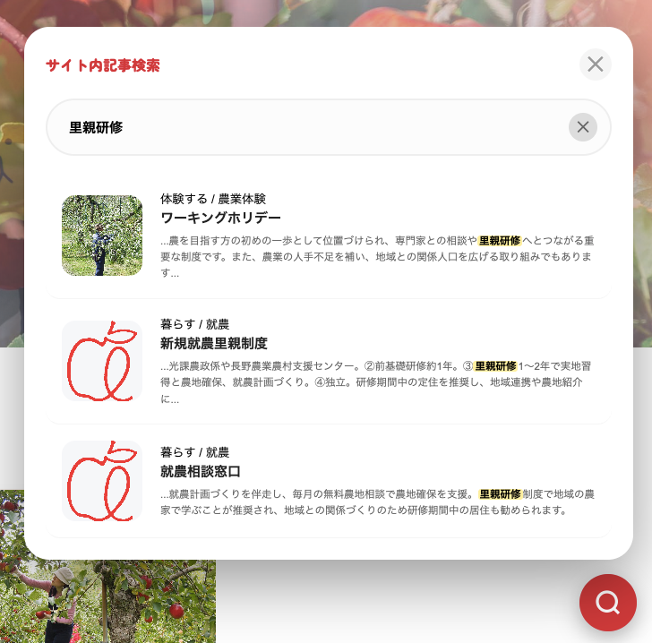 -
多言語化切り替えUI:
ヘッダーに配置されたボタンから、日本語・英語・繁体中文への即時切り替えをサポート。インバウンドユーザーも迷わず母国語の情報にアクセス可能。
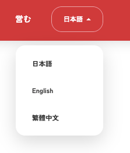
-
スプレッドシート完全連動ヘッダー:
上部グローバルナビゲーション（「知る」「味わう」「体験する」「暮らす」「営む」）は、Google
Spreadsheetの基準情報（マスターデータ）と完全に連動しており、CMS上でカテゴリが追加・変更されると自動でUIに反映されます。
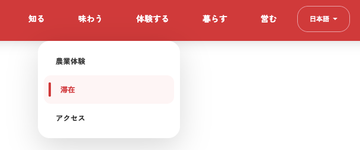
-
フッターナビゲーション:
お問い合わせ、サイトマップ、サイトポリシー等の必須導線を各ページ下部に統一して配置。
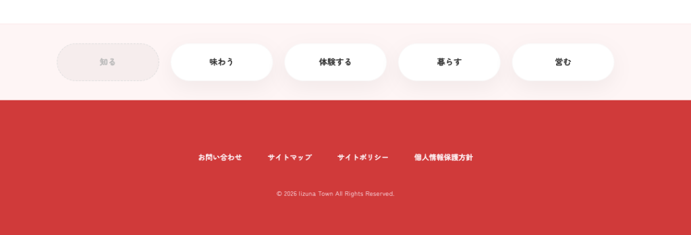
7.2 アクション・連携機能
-
ポップアップ詳細画面（モーダルUI）:
記事をクリックすると、ページ遷移を伴わず画面中央に詳細情報が浮き上がるように表示（ポップアップ）される軽量なUI設計。ユーザーは元のページを見失うことなく、次々と情報を閲覧可能です。
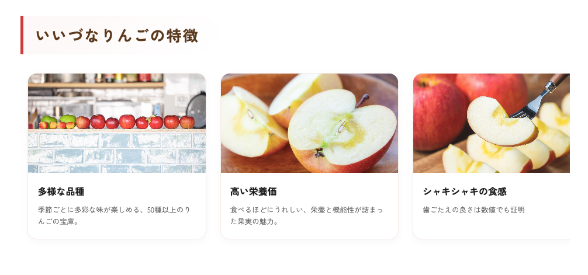
-
共有・印刷アクション: 各コンテンツには、SNS等での拡散を促す「共有ボタン」と、ブラウザのPrint to
PDF機能を呼び出してチラシ化する「印刷ボタン」を標準搭載。※印刷はPC環境のみ。
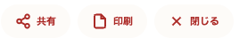A4チラシ印刷イメージ: 詳細画面上の「印刷」ボタンを押下すると、画面遷移なしに印刷用レイアウトがバックグラウンドで生成されます。ヘッダーやフッター・不要なUI要素を排除し、アクセス用QRコードやクレジット、発行日時等を自動付与した上でPDF（A4）として出力されます。
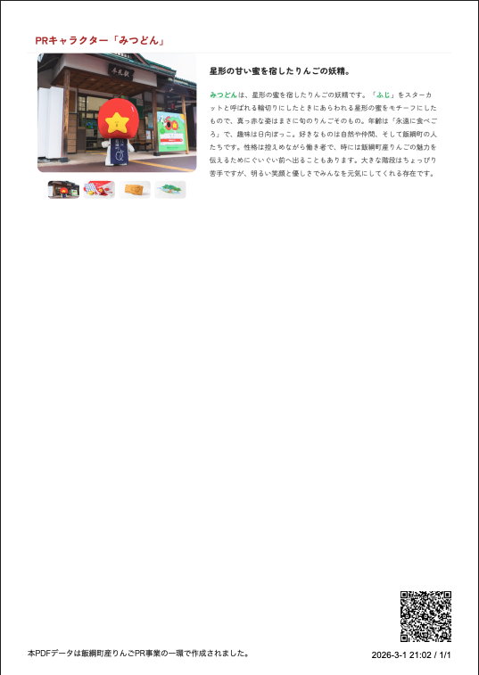 - ダウンロードボタン (Download): パンフレットPDFなど、配布資料の直接取得。
- 問い合わせ・情報提供統合窓口:
ユーザーの目的に応じて「情報提供」「お問い合わせ」「記事投稿」の3つのタブに分かれた統合フォームを設置。送信されたデータは自動連携により直接Google Spreadsheetのデータベースへ蓄積され、運用者の管理コストを最小化します。
-
「情報提供」「お問い合わせ」タブ（ニックネーム可）:
町の発見や気軽な質問を促進するため、本名を必須としない設計。
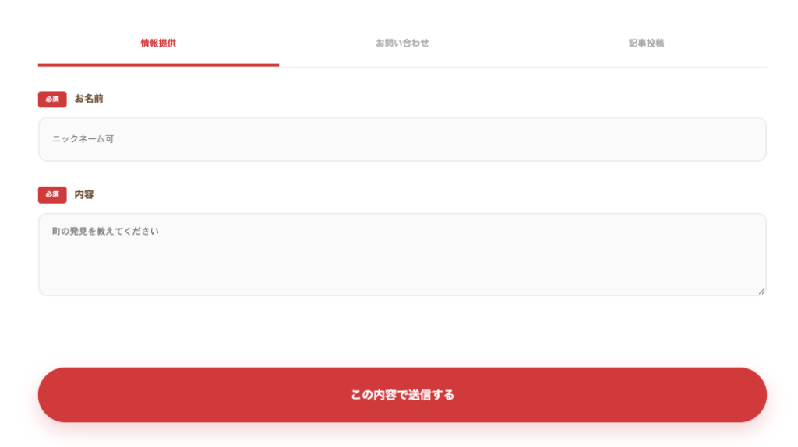 -
「記事投稿」タブ（カテゴリ選択）:
生産者、お店、イベント、記事など、登録内容に応じた専用の入力枠へ分岐。
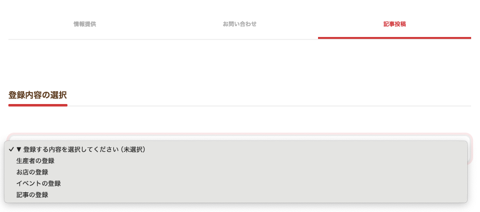 -
生産者・事業者向け詳細入力フォーム（情報の質担保）:
「生産者の登録」では、栽培品種（サンふじ、シナノスイート等）、加工品の有無、作付面積、経営区分など、BtoB取引（仕入れ事業者等）にも耐えうる詳細なプロファイリング項目を用意。入力は任意としながらも、「埋めるべき枠組み」を提示することで、質の高い一次情報の自発的な提供を促す仕様設計となっています。
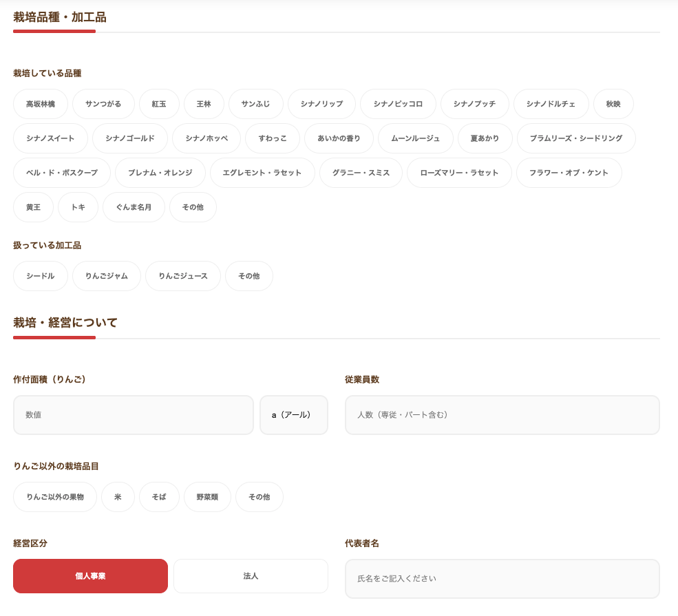
-
「情報提供」「お問い合わせ」タブ（ニックネーム可）:
町の発見や気軽な質問を促進するため、本名を必須としない設計。
7.3 拡張可能機能
- Googleマップ連携: りんご関連スポットの一元マップ表示と、現在地からの円滑なナビゲーション機能。
- カード等との連携: 各品種や事業者ごとの独自パラメータURL発行を活用し、外部PRやリアル媒体への円滑な展開機能。
- 生産者向けメール配信（対象を絞った情報到達）: 登録済みの農家等に対する一斉・個別のお知らせ配信等のコミュニケーション機能。
8. コンテンツ企画・記事制作体制
システムという「箱」だけでなく、その中に入る「高品質な一次情報（記事）」を自社で規格化し、継続的に生み出すための制作プロセスです。
- 企画・ディレクション: 取材対象の選定から、読者の関心を惹く切り口の設計、全体の進行管理を一貫して実施。
- 取材インタビュー・執筆: 現地に足を運び、現場のリアリティや想いを言語化するプロフェッショナルなライティング。
- 撮影（機材・スタッフ込み）: 記事の魅力を最大限に引き出す高品質な写真撮影。
- サムネイル・画像編集: 各SNSやWEBのアイキャッチに最適化された画像の制作と補正。
- CMS反映・構造化マークアップ: 執筆した記事を単なるテキストとしてではなく、SEOに最適化された構造化データとしてCMSへ反映。
スモール記事（カード形式）の制作と稼働状況
小さいカード形式で表示される記事を、実際の取材と調査によって作成しました。
りんごの品種ごとの小記事なども含め、現状（上部の「現在の稼働コンテンツ（記事）総数」にリアルタイムで記載）以下の規模感で制作を行っています。
¥2,000 × 87本
現地取材記事（作成済・未掲載）
町内での実際の動きを取材して記事を作成しています（現在は未掲載）。
- 明月堂： りんごフェアについて
- レイチェル（外国人）： りんご収穫体験記事
9. アクセス解析
システム独自の指標を網羅的に解析し、PDCAサイクルを回すための専用ダッシュボードです。
ダッシュボード : 全体KPI & トレンド推移
直近のトラフィック状況（指定期間の合計PV、ユニークユーザー数、詳細表示回数、キーワードクリック数）と、前期間とのトレンド比較を一目で把握できます。
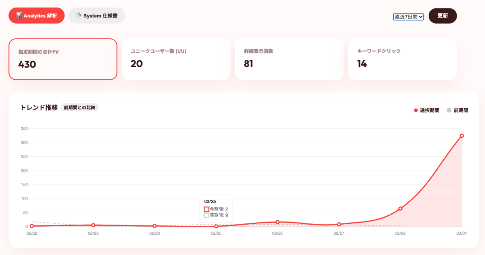各種ランキング・指標解析
人気ページやアクティブ滞在時間（熟読時間）など、様々な角度からユーザーの興味関心を可視化します。
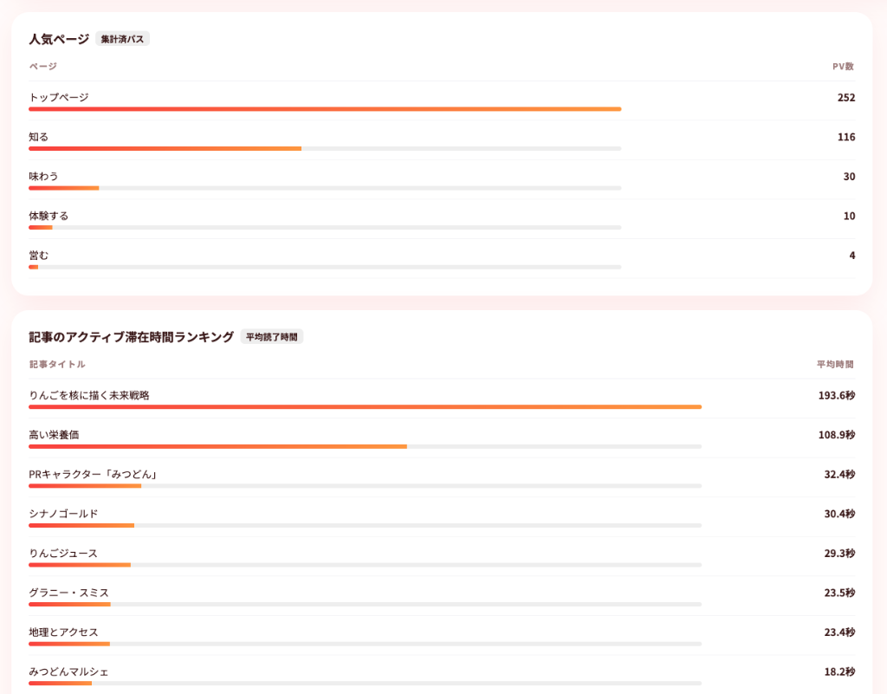- 人気ページ (集計済パス): 「トップページ」「知る」「味わう」など、どのコンテンツ群が最も閲覧されているかを計測。
- 記事のアクティブ滞在時間 (平均読了時間): スクロールやタブのアクティブ状態を監視し、実際に記事が『読まれている』時間を秒単位で正確に計測・ランキング化（例：「りんごを核に描く未来戦略」 193.6秒 など）。
- 注目キーワード (検索・自動リンク): 詳細画面（モーダル）内からの検索や、自動付与されるキーワードリンクのクリック傾向をヒートマップ的に抽出。
- 人気アイテム (詳細表示): 品種やスポットなど、個別のカードがどれだけ詳細閲覧されたかをランキング形式で一覧化。
- 流入地域 (都道府県・市区町村): IPベースでアクセス元の地域（県内外、国内外）を解析しターゲティングの評価に活用。
- 外部アクション (SNS・PDF・リンク): 記事のSNSシェア数、連動パンフレットのPDF発行数、外部サイト（行政資料等）への遷移数など、コンバージョン指標を正確にトラッキング。
10. 連動パンフレット
WEBサイトと完全連動し、観光案内所や直売所、イベント会場といったリアルな接点において手渡しできる物理的なタッチポイントとしての役割を担います。単なる「動的生成の仕組み」としてではなく、りんごの町としての高いブランド価値をパッケージングする「デザイン媒体」として定義しています。
デザイン・コンセプト
-
「i」のモチーフ: 表紙デザインは「iizuna（飯綱）」の頭文字であり、同時に情報の総合受付（information）のピクトグラムとして世界共通で認知されている「i」をダイナミックなモチーフとして採用。
- 唯一無二のランダム生成: 「i」のモチーフ上に配置されるりんごの画像（品種）は、生成のたびにランダムで切り替わります。これにより、印刷するたびに異なる表情を見せる「世界に一つだけのパンフレット」となります。
- QRコードによるWEBへの還流: 表紙にはシンプルで大きなQRコードを一つだけ配置し、詳細な最新情報（WEBサイト）への強力な導線として機能させます。紙面で興味を引き、WEBで詳細な体験（記事・予約・購入）へ繋げる動線を体現します。
-
情報の網羅性（裏面デザイン）:
WEB上で見られる情報の構造と網羅性を表現。多言語対応が可能な媒体として、できるだけ文字で説明することを意識し、「このパンフレット（サイト）を見れば全てが分かる」状態を作ります。
デザインとして、りんごの中身をイメージするような黄色と蜜をイメージする濃い黄色を採用。濃い黄色のシルエットは北信五岳の稜線をイメージしており、飯綱町での景色を潜在的に彷彿とさせる仕掛けとなっています。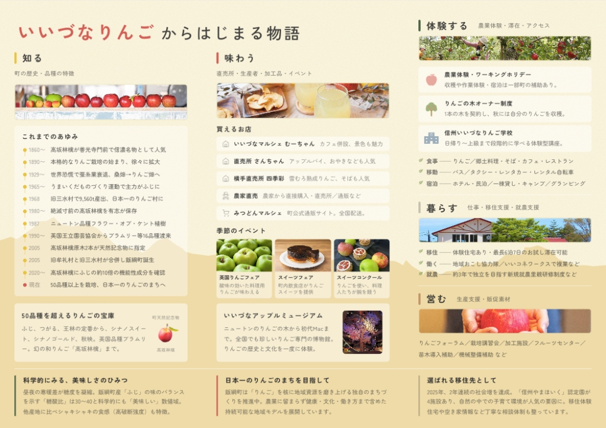
（補足機能）Flyer Studio システム
上記の連動パンフレットを、外部業者へ都度発注することなく「必要な時に、必要な言語で、即座に印刷・補充」するためのサポートツールとして、『Flyer Studio』システムを整備しています。
- カラーバリエーション切り替えと多言語出力:
季節やターゲット、配置場所のトーンに合わせてベースカラーをUI上で自由に変更可能。さらに日本語・英語・中国語（繁体字）ごとのデータと連動し、言語に合わせて色を分けるといった印刷運用も直感的に行えます。
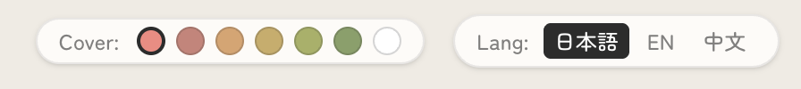
- ブラウザ上での高度な描画: 利用者のOS環境（Windows/Mac）やブラウザに依存せず、常に1:1のピクセルパーフェクト配置を強固に保証する独自描画アルゴリズムを搭載。
- ワンクリックでのPDF出力: 編集後、PDF出力ボタンから該当言語・カラーのA4印刷用高品位PDFを出力可能。店舗やイベント会場でのオンデマンド印刷を強力にサポートします。
【生成ツール出力・バリエーション例】
11. システムURL・リソース管理
| リソース種別 | URL / エンドポイント |
|---|---|
| WEBサイト (本番候補) | https://appletown-iizuna.com/ |
| CMS 管理用 Spreadsheet | https://docs.google.com/spreadsheets/d/1ODqTU1KspNWDZq7NYICyeAjUOHNdQIV9TfFs9fpPKkU/edit?usp=sharing |
| 連動パンフレット (Flyer Studio) | https://iizuna-flyer-studio.vercel.app/ |
| アクセス解析 (GAS API) | https://iizuna-apple-analythics.vercel.app/ |
12. 進行状況・全体予算（見積もり）
これまでの仕様設計・実装に基づき、各項目の予算見積もりと現在の進捗ステータスを記載します。
見積額に対する実際の実施業務（実績）の整合性として、システム設計・構築・企画制作など「各機能がどの工程の成果として紐づいているか」の算出根拠を内訳として併記しています。
【戦略・事業設計】
第3章・第4章に記載のある通り、飯綱町独自の行動変容モデル「APPLE」と4つのペルソナ設計、それに基づく独自のポジショニング戦略の立案費用です。これらはコアメンバーとの複数回（月1〜2回ペースで実施）にわたる要件定義ワークショップや調査・分析を通じて策定された実績値に基づきます。
| 項目 | 見積額（税率10%） | 内訳 | 進捗状況 |
|---|---|---|---|
| (1) ワークショップ企画・進行 | 400,000円 | 100,000円 × 4回 | 完了 |
| (2) 市場調査／競合ベンチマーク報告書作成 | 150,000円 | 150,000円 × 1式 | 完了 |
| (3) ペルソナ＆顧客体験プロセス（カスタマージャーニー）定義 | 150,000円 | 150,000円 × 1式 | 完了 |
| (4) ブランドメッセージ／ポジショニングフレーム策定 | 150,000円 | 150,000円 × 1式 | 完了 |
| (5) 事業設計図／評価モデル設計 | 150,000円 | 150,000円 × 1式 | 完了 |
【情報設計・IA】
第5章「システム設計」における、多言語対応とSEOを両立する単一システム構造のUI/UXワイヤーフレーム作成およびプロトタイピングの費用です。また、町内に散在する関連サイトや紙媒体情報の棚卸しを実施し、「情報のハブ」として機能させるためのナビゲーション構造を確立した設計・レビュー工数を計上しています。
| 項目 | 見積額（税率10%） | 内訳 | 進捗状況 |
|---|---|---|---|
| (1) コンテンツ棚卸＆ステークホルダーマッピング | 100,000円 | 100,000円 × 1式 | 完了 |
| (2) サイトマップ＆ワイヤーフレーム作成 | 150,000円 | 150,000円 × 1式 | 完了 |
| (3) プロトタイプ作成（PC/SP） | 100,000円 | 100,000円 × 1式 | 完了 |
| (4) 設計レビュー会議（議事録含む） | 100,000円 | 50,000円 × 2回 | 進行中 |
【WEB構築】
高品質なカード型UI・グラスモーフィズムを取り入れた専用の「デザインシステム」構築費と、実際のフロントエンド実装費です。特に、現場運用を最適化するためGoogleスプレッドシートをCMSとして独自に組み込み、それを多言語出力と個別URL（クエリ動的生成）に同期させる高度なシステム開発が含まれます。
🔄 ページ構成変更・機能追加に伴う予算振替について（総額維持）：
当初の見積もりからページ構成を見直し、主要項目を精査した結果、各言語ともに「トップページ1P＋下層ページ9P（計10P）」へ統合・最適化しました。また協議を通じて必要となった「検索（絞り込み）機能」「印刷最適化」「SNSシェア機能等の動的システム」の実装費を新たに追加。これにより、当初の日本語下層ページ20Pからの削減分で浮いた予算を、これら「追加機能開発」および「中国語ページ追加」へ充当し、WEB構築全体の総額（1,830,000円）を変えずに実態に合わせた各ページの単価調整による予算の組み換えを行なっております。
| 項目 | 見積額（税率10%） | 内訳 | 進捗状況 |
|---|---|---|---|
| (1) デザインシステム・スタイルガイド策定 | 200,000円 | 200,000円 × 1式 | 完了 |
| (2) トップページ開発（日本語） | 80,000円 | 80,000円 × 1P | 完了 |
| (3) 下層ページ開発（日本語） ※当初20Pから主要9Pへ構成統合・単価調整済 |
315,000円 | 35,000円 × 9P | 完了 |
| (4) 新規機能実装（検索照会・シェア・印刷最適化等） ※要件追加に伴うシステム開発費 |
153,000円 | 153,000円 × 1式 | 完了 |
| (5) トップページ開発（英語） ※デザイン流用により単価減額調整 |
70,000円 | 70,000円 × 1P | 完了 |
| (6) 下層ページ開発（英語） ※日本語同期対応・機能追加に伴う単価調整 (9P) |
396,000円 | 44,000円 × 9P | 完了 |
| (7) トップページ開発（中国語） ※予算振替による追加言語対応分 |
70,000円 | 70,000円 × 1P | 完了 |
| (8) 下層ページ開発（中国語） ※予算振替による追加言語対応分 (9P) |
396,000円 | 44,000円 × 9P | 完了 |
| (9) CMS導入・権限設計／管理者研修 | 100,000円 | 100,000円 × 1式 | 完了 |
| (10) QA・クロスブラウザ／レスポンシブテスト ※動作確認済: Chrome / Safari / Edge / iOS / Android |
50,000円 | 50,000円 × 1式 | 完了 |
【企画記事制作】
当初は特定領域に絞った新たな切り口での大型記事4本制作を想定していましたが、実際の事業開始・全体構成の構築過程において、構造化・定義されていない町内の情報があまりにも多いという実態が判明しました。
そのため、新たな切り口を企画する以前に、まずは「基本的な記事執筆と情報収集」から着手する必要があると判断。総予算額（760,000円）は据え置きつつ、予算の最適配分を実施し、りんごの品種や細かい観光項目ごとに切り分けた80件以上の小記事（カード形式）の量産・基礎情報のCMS実装へとアプローチを転換しています。これに加え、「りんごフェアに関する取材記事」や「外国人視点での農業体験レポート」なども特記記事として現在制作進行中です。
| 項目 | 見積額（税率10%） | 内訳 | 進捗状況 |
|---|---|---|---|
| (1) 企画・情報構造化（全体設計） ※大型記事4本から網羅的カード記事群への設計転換 |
200,000円 | 一式 | 進行中 |
| (2) 取材・ライティング（小記事量産／特記記事） ※カード記事80件超、フェア・体験レポート等 |
200,000円 | 一式 | 進行中 |
| (3) 撮影・素材収集（機材・スタッフ込み） | 200,000円 | 一式 | 進行中 |
| (4) サムネイル／画像編集 | 80,000円 | 一式 | 進行中 |
| (5) CMS反映（スプレッドシートへの構造化流し込み） | 80,000円 | 一式 | 進行中 |
【実行伴走・運用】
稼働後の「Analytics ダッシュボード」を活用したアクセス状況可視化レポート作成・運用（月額2万円）やサーバー保守費等の実費です。
🔄 業務内容の高度化について：
当初見積もりの「(3) 簡易アクセス解析レポート制作」については、単なる月次の簡易レポート提出から大きく要件を引き上げ、「アクセス解析リアルタイムダッシュボード（Vercel）の構築・保守」へと実態を高度化させています。これにより、関係者がいつでも最新のデータソースへアクセスし、自立的に改善サイクルを回せる環境を提供しています。これに伴い進行中ステータスとしています。
また、初期構想の2025年7月から年度末の9ヶ月間にわたる、役場や協力隊・ステークホルダーとの定例ミーティング・全体PM伴走工数（月額5万円）を含みます。
| 項目 | 見積額（税率10%） | 内訳 | 進捗状況 |
|---|---|---|---|
| (1) ドメイン登録（.jp ドメインを想定） | 10,000円 | 10,000円 × 1式 | 完了 |
| (2) ホスティング保守（月額） ※2025年11月〜2026年3月 |
150,000円 | 30,000円 × 5ヶ月 | 進行中 |
| (3) 簡易アクセス解析レポート制作（月額） ※実態：アクセス解析リアルタイムダッシュボード構築・保守（2025年11月〜2026年3月） |
100,000円 | 20,000円 × 5ヶ月 | 進行中 |
| (4) ステークホルダー連携伴走（月額） ※2025年7月〜2026年3月 |
450,000円 | 50,000円 × 9ヶ月 | 進行中 |
【パンフレット制作】
第9章に記載された、WEBと1対1で連動するリアル拠点の紙媒体（連動パンフレット）構築費用です。WEB用に生成された情報のデータベースを一元活用し、持ち歩き手配り用として再レイアウト・デザイン化する構成費と、実物の印刷実費（8,000部）の計上となります。
| 項目 | 見積額（税率10%） | 内訳 | 進捗状況 |
|---|---|---|---|
| (1) デザイン・レイアウト | 200,000円 | 200,000円 × 1式 | 完了 |
| (2) 印刷費用（8,000部／フルカラー両面） | 100,000円 | - | 未着手 |